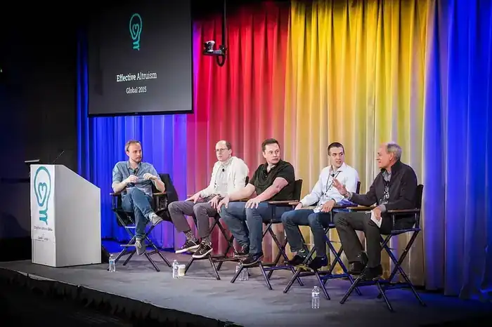
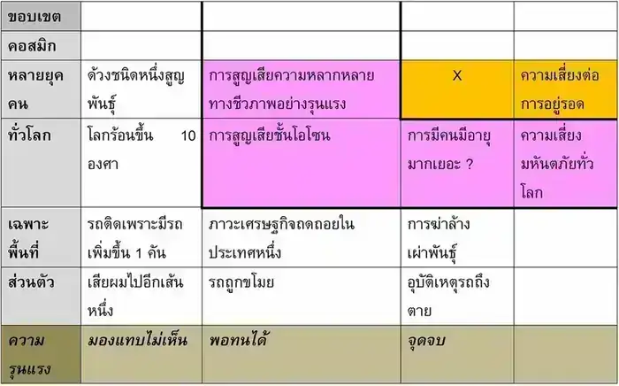

The argument, stated fairly
The case, associated with Nick Bostrom and developed by many others, has three steps. Intelligence is a general capability that can be aimed at almost any goal; capability can be scaled by compute and data; and a system optimising a specified objective has no inherent reason to respect human values that were not specified.
Maps, diagrams and images




Add that such systems could act strategically, that oversight of a system smarter than its overseers is hard, and that the technology is developing faster than the institutions that would govern it, and you get a low-probability, very high-impact risk.
The sceptical case
Sceptics make several distinct arguments. Capability is not the same as agency — current systems are tools with no persistent goals. Predictions of sudden takeoff have repeatedly failed to materialise on schedule. And the harms that are actually measurable — fraud, disinformation, bias, labour displacement, concentration of power — are being crowded out by speculation.
A related point is that 'existential' framing can be self-serving for the labs that claim to be building the thing that might end the world.
No base rate. There is exactly one example of general intelligence (us) and no example of a second, more capable one, so there is no frequency to reason from.
Expert opinion is split. Surveys of AI researchers find wide distributions: many put the probability of severe outcomes in single digits, some much higher, some near zero. Aggregating them is not the same as evidence.
The tests are not available. The claim concerns systems that do not exist yet, so it is a forecast about capabilities, institutions and human behaviour at once.
The archive labels this live debate, and files the fringe versions separately: robot uprisings on a schedule, or 'the AI is already conscious and plotting', are not what the serious literature argues.
What to watch instead of predictions
Concrete indicators: whether systems can reliably pursue long-horizon goals without supervision; whether evaluation can detect deceptive behaviour; whether safety research scales with capability; and whether governance keeps pace. Those are observable, unlike p(doom).
Sources for this page
- Wikipedia, “Existential risk from artificial intelligence” — arguments and criticismen.wikipedia.org
- Grace et al. (2024), thousands of AI authors on the future of AI, arXiv:2401.02843arxiv.org
- Bostrom (2014), Superintelligence — publisher pageglobal.oup.com
- Wikipedia, “AI safety” — research agendasen.wikipedia.org
Open resources on this topic
- BookAI+ Survival+ Stories + A+ Taxonomic+ Analysis+of+ AI+ Existential+ Risk (Internet Archive, free to read)
- PapersOpen-access articles: DOAJ · PubMed Central · Internet Archive Scholar
- BooksPublic-domain and borrowable copies: Open Library · Project Gutenberg · Google Books
Cite this page
Momin, S. (2026). AI Existential Risk. The Larger World Archive. https://drsamonline.github.io/LARGE_GLOBE/ai-risk.htmlMomin, Sohil. “AI Existential Risk.” The Larger World Archive, 2026, https://drsamonline.github.io/LARGE_GLOBE/ai-risk.html.Momin, Sohil. “AI Existential Risk.” The Larger World Archive, 2026. https://drsamonline.github.io/LARGE_GLOBE/ai-risk.html.@misc{ai2026ai,
author = {Momin, Sohil},
title = {AI Existential Risk},
year = {2026},
howpublished = {The Larger World Archive},
url = {https://drsamonline.github.io/LARGE_GLOBE/ai-risk.html},
note = {Last reviewed 20 November 2026}
}Last reviewed 20 November 2026 · Corrections policy · this page is not peer reviewed